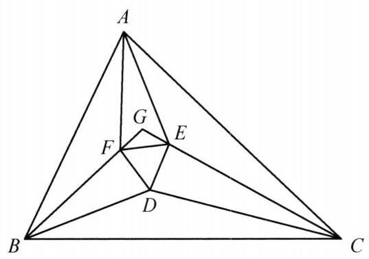

9 例 9：角三等分线与莫利正三角形构造
9.1 题目
设 \triangle {ABC} 三内角的三等分线两两相交于 D, E, F . 证明: \triangle {DEF} 是正三角形.

图 1-8
9.2 参考解答
如图 1-8,设 {BG},{BD} 是 \angle {ABC} 的三等分线, {CG},{CD} 是 \angle {ACB} 的三等分线,于是 D 为 \triangle {BCG} 的内心,且
\angle {BGC} = {180}^{ \circ } - \left( {\frac{2}{3}\angle {ABC} + \frac{2}{3}\angle {ACB}}\right)
= {60}^{ \circ } + \frac{2}{3}\angle {BAC}\text{ . }
以 {GD} 为对称轴,作 \angle {GDF} = \angle {GDE} = {30}^{ \circ } ,与边 {GB},{GC} 分别交于点 F, E ,顺次连接 D, E, F ,则 \triangle {DEF} 是顶点为 {60}^{ \circ } 的等腰三角形,即正三角形.
在 {AB} 上取 {BH} = {BD} ,在 {AC} 上取 {CK} = {CD} ,连接 {HF},{EK},{HE},{FK} ,则
\triangle {BHF} \cong \triangle {BDF},\triangle {CKE} \cong \triangle {CDE}.
所以,
{FH} = {FD} = {FE} = {DE} = {EK},
①
且
\angle {BFD} = \angle {FGD} + \angle {GDF}
= \frac{1}{2}\left( {{60}^{ \circ } + \frac{2}{3}\angle {BAC}}\right) + {30}^{ \circ }
= {60}^{ \circ } + \frac{1}{3}\angle {BAC}\text{ . }
所以
\angle {EFH} = {360}^{ \circ } - 2\angle {BFD} - \angle {DFE}
= {360}^{ \circ } - 2\left( {{60}^{ \circ } + \frac{1}{3}\angle {BAC}}\right) - {60}^{ \circ }
= {180}^{ \circ } - \frac{2}{3}\angle {BAC}.
在等腰三角形 {FEH} 中,有
\angle {FHE} = \frac{1}{2}\left( {{180}^{ \circ } - \angle {EFH}}\right) = \frac{1}{3}\angle {BAC}.
②
同理可得
\angle {FKE} = \frac{1}{3}\angle {BAC}.
③
由①②③可知，四边形 {HFEK} 为圆内接等腰梯形，弦 {HF} ， {FE} ， {EK} 所对的圆周角均为 \frac{1}{3}\angle {BAC} ，所以弦 {HK} 所对的圆周角为 \angle {BAC} ，这表明 A 在外接圆上，于是有 \angle {HAF} = \angle {FAE} = \angle {EAK} . 即 {AF} ， {AE} 为 \angle {BAC} 的三等分线，正三角形 {DEF} 的三个顶点是 \triangle {ABC} 三内角三等分线两两相交的交点.
因此， \triangle {ABC} 的三内角的三等分线两两相交的交点组成的三角形与正 \triangle {DEF} 重合，也是个正三角形.
注:这是著名的莫莱定理，其证明方法比较典型.
9.3 解题思路与分析
这个证明之所以让人觉得“费解”、像变魔术一样，是因为课本采用的是拆掉脚手架之后的“正向综合法”（从已知直接推到结论），而隐去了数学家最初探索时的“逆向分析法”（执果索因）。
要看懂这个证明是怎么想出来的，我们需要顺着发明者的真实思路，把它倒过来还原。整个证明其实由四个核心灵感串联而成：
9.3.1 灵感一：正面强攻太难，不如“先造正三角形，再证三等分”（同一法）
莫莱定理如果正面硬算（画出全部 6 条三等分线，去算 \triangle DEF 的角度），会非常痛苦。因为 D, E, F 三个点悬浮在三角形内部，每一点都同时受两个顶角的影响，很难直接找到全等三角形或四点共圆。
于是几何学家退了一步：暂时不管 \angle A 的三等分线，只画 \angle B 和 \angle C 的三等分线。 这样做有一个巨大的好处： * BD, CD 各占 \frac{1}{3}\angle B, \frac{1}{3}\angle C，而 BG, CG 各占 \frac{2}{3}\angle B, \frac{2}{3}\angle C。 * 这意味着 BD, CD 恰好是 \triangle BGC 的角平分线，点 D 自然就成了 \triangle BGC 的内心！ * 既然 D 是内心，连接 GD，GD 就自动平分 \angle BGC。
有了 GD 这条角平分线作为局部对称轴，与其苦苦证明交出来的 \triangle DEF 是正三角形，不如反客为主（同一法）：直接以 GD 为对称轴，向两边各张开 30^\circ 作出 DF, DE 交 BG, CG 于 F, E。 根据角边角（\text{ASA}），\triangle GDF \cong \triangle GDE，这就强行造出了一个正三角形 \triangle DEF。接下来的唯一任务，就是证明这个“人造正三角形”的顶点 F, E 跟顶点 A 连起来后，AF, AE 恰好三等分 \angle A。
9.3.2 灵感二：如何把内部的 F, E 和外部的边 AB, AC 联系起来？（角平分线触发“翻折”）
书中突然写了一句：“在 AB 上取 BH = BD，在 AC 上取 CK = CD”。这是全篇最让人摸不着头脑的一步——怎么突然想到去截这两条线段的？
其实这是平面几何中最经典的条件反射： 1. 我们的目标是研究 \angle A（由外部的边 AB, AC 夹成），但已知条件却集中在内部的 \triangle DEF 上。我们需要一座桥梁，把内部的边转移到 AB, AC 上。 2. 观察直线 BF（即 BG）：因为 BG, BD 是 \angle B 的三等分线，所以BF 恰好是 \angle ABD 的角平分线！ 3. 几何直觉：看到角平分线，第一反应就是“沿角平分线翻折（构造轴对称全等）”！
把 \triangle BDF 沿着角平分线 BF 往外翻折到边 AB 上，点 D 落到的位置就是点 H（即 BH = BD）；同理，把 \triangle CDE 沿着角平分线 CE 翻折到边 AC 上，点 D 落到的位置就是点 K（即 CK = CD）。
这一翻折，奇迹发生了：原本缩在里面的正三角形的两条边 FD, ED，被“展开”到了外围，变成了 FH 和 EK。于是我们顺手得到了一条极为漂亮的三等长折线链： FH = FE = EK
9.3.3 灵感三：看到“三段等长”与“三等分角”，立刻联想到什么？（圆周角定理！）
现在停下来，把我们手头有的条件和想要证的结论放在一起对比： * 手头有的条件：三条相等的线段 FH = FE = EK。 * 想要证的结论：它们对顶点 A 张开的三个角相等，即 \angle HAF = \angle FAE = \angle EAK = \frac{1}{3}\angle A。
问自己一个问题：在平面几何里，什么时候“相等的线段”会对同一个点张开“相等的角”？ 答案只有一个：在圆里！“同圆中，等弦对等圆周角”！
这就是整个证明最核心的“顿悟”时刻： > 如果莫莱定理是真的，那么 A, H, F, E, K 这五个点一定共圆！且 FH, FE, EK 就是这个圆上三条相等的弦！
9.3.4 灵感四：顺藤摸瓜，先锁死四点共圆，再拉点 A 入局
一旦通过逆向思考猜到了“A, H, F, E, K 五点共圆”，剩下的证明步骤就完全变成了顺水推舟的验证工作：
先证 H, F, E, K 四点共圆： 既然已经有 FH = FE = EK，这四点连起来是个折线。只要算出两个顶角 \angle HFE 和 \angle FEK 相等，它就是一个对称的等腰梯形，而等腰梯形必定四点共圆！ 于是作者去算了 \angle BFD = 60^\circ + \frac{1}{3}\angle A，进而算出： \angle EFH = 360^\circ - 2\angle BFD - 60^\circ = 180^\circ - \frac{2}{3}\angle A 同理 \angle FEK = 180^\circ - \frac{2}{3}\angle A，四点共圆顺利得证！
再算每条等弦所对的圆周角： 在等腰 \triangle FEH 中，顶角是 180^\circ - \frac{2}{3}\angle A，底角自然就是： \angle FHE = \frac{1}{3}\angle A 这说明在这个外接圆中，每条等弦（HF, FE, EK）所对的圆周角都恰好是 \frac{1}{3}\angle A！
最后把点 A 拉到圆上： 三条等弦合起来对应的总弦是 HK，因此弦 HK 在圆周上所对的圆周角正好是 3 \times \frac{1}{3}\angle A = \angle A。 而点 H 在射线 AB 上，点 K 在射线 AC 上，原本的顶角 \angle HAK 就是 \angle A（且通过角度关系可知点 A 与圆弧同侧，直线 AB 与圆除点 H 外只有一个交点），因此点 A 必定就在这个外接圆上！既然 A 在圆上，三条等弦 HF, FE, EK 对点 A 张开的圆周角自然相等，全部等于 \frac{1}{3}\angle A。
9.3.5 思维还原对照表
把“发明者的逆向探索”和“课本上的正向书写”对比来看，脉络就彻底清晰了：
| 思考阶段 | 发明者的逆向分析（怎么想出来的） | 课本的正向书写（怎么写出来的） |
|---|---|---|
| 1. 破局 | 三角同时三等分太乱 \rightarrow 先固定 B, C，利用内心对称性直接“钦定”正 \triangle DEF（同一法）。 | 设 BG, BD 和 CG, CD 三等分 \angle B, \angle C，以 GD 为对称轴作 30^\circ 角得正 \triangle DEF。 |
| 2. 搭桥 | 要联系边 AB, AC，发现 BF, CE 是 \angle ABD, \angle ACD 的平分线 \rightarrow 沿角平分线向外翻折！ | 在 AB, AC 上截取 BH=BD, CK=CD，证 \triangle BHF \cong \triangle BDF，得 FH=FE=EK。 |
| 3. 联想 | 要证 AF, AE 三等分 \angle A，且已有三等长线段 FH=FE=EK \rightarrow 等弦对等角，必有五点共圆！ | （隐去不提，直接开始算角） |
| 4. 收官 | 只要算出 \angle EFH = 180^\circ - \frac{2}{3}\angle A，就能凑出圆周角 \frac{1}{3}\angle A，从而把点 A 纳入圆周。 | 计算 \angle BFD \rightarrow \angle EFH \rightarrow \angle FHE = \frac{1}{3}\angle A，由圆内接等腰梯形推导出点 A 共圆。 |
9.4 分步证明
9.4.1 步骤 0：已知条件与逆向构造思路
在 △ABC 中，三内角的三等分线两两相交于 D, E, F。 直接正向推导 △DEF 为正三角形较为繁复。我们采用经典的倒推构造法（逆向思维）： 设 ∠A = 3α, ∠B = 3β, ∠C = 3γ（满足 α + β + γ = 60°）。 我们先从底角三等分线出发确定点 D 与辅助点 G，逆向构造出正三角形 △DEF，再证明从顶点 A 引出的两条射线恰为 ∠BAC 的三等分线。
9.4.2 步骤 1：辅助点 G 与内心性质
设射线 BG, BD 是 ∠ABC 的三等分线（∠GBC = 2β, ∠DBC = β），CG, CD 是 ∠ACB 的三等分线（∠GCB = 2γ, ∠DCB = γ），两射线交于点 G。 在 △BCG 中，底角分别为 2β 与 2γ，而 BD, CD 恰好分别是这两个角的平分线。 因此，D 恰为 △BCG 的内心！ 由此得连线 GD 为顶角平分线（对称轴），且计算顶角得： ∠BGC = 180° - (2β + 2γ) = 60° + 2/3∠A 从而 ∠BGD = ∠CGD = 30° + 1/3∠A。
9.4.3 步骤 2：逆向构造正三角形 DEF
以 GD 为对称轴，作 ∠GDF = ∠GDE = 30°，两射线分别与边 GB, GC 交于点 F, E。顺次连接 D, E, F。 由轴对称及全等 △GDF ≅ △GDE（ASA）可知：DF = DE。 而顶角 ∠EDF = ∠GDF + ∠GDE = 30° + 30° = 60°。 顶角为 60° 的等腰三角形必为正三角形，故 △DEF 是正三角形（DE = EF = FD）。
9.4.4 步骤 3：截取等长并证明两对三角形全等
在边 AB 上截取 BH = BD，在边 AC 上截取 CK = CD，连接 HF, EK。 在 △BHF 与 △BDF 中：BH = BD，BF 为公共边，夹角 ∠HBF = ∠DBF = β。 由 SAS 判定得：△BHF ≅ △BDF，因此 FH = FD。 同理，在 △CKE 与 △CDE 中由 SAS 判定得：△CKE ≅ △CDE，因此 EK = ED。 结合正三角形等边性质，得到关键等长链： FH = FD = FE = DE = EK。
9.4.5 步骤 4：角度追索：计算底角 ∠FHE = ∠BAC / 3
在 △GDF 中，外角 ∠BFD = ∠FGD + ∠GDF = (30° + 1/3∠A) + 30° = 60° + 1/3∠A。 由全等得 ∠BFH = ∠BFD。 观察点 F 处的周角： ∠EFH = 360° - 2∠BFD - ∠DFE = 360° - 2(60° + 1/3∠A) - 60° = 180° - 2/3∠A。 因为 FH = FE，在等腰三角形 △FEH 中，两底角为： ∠FHE = 1/2(180° - ∠EFH) = 1/3∠A = α。 同理在等腰三角形 △EKF 中可得：∠FKE = 1/3∠A = α。
9.4.6 步骤 5：四点共圆与圆内接等腰梯形
在四边形 HFEK 中，两腰 FH = EK，且底角 ∠FHE = ∠FKE = 1/3∠A（点 H, K 在 FE 同侧且对 FE 张角相等）。 根据圆周角逆定理，H, F, E, K 四点共圆，且 HFEK 为圆内接等腰梯形！ 在该外接圆中，相等弦所对的圆周角相等，因此三段等弦 HF, FE, EK 所对的圆周角均为： ∠FHE = 1/3∠A = α。
9.4.7 步骤 6：顶点 A 落在外接圆上，莫莱定理得证
连续三段等弦 HF, FE, EK 所张的总圆周角为 3 × (1/3∠A) = ∠A。 而点 A 是直线 BH（即 AB）与直线 CK（即 AC）的交点，夹角恰为 ∠HAK = ∠BAC = ∠A。 根据圆周角判定定理，顶点 A 必然落在该外接圆上！ 由圆周角定理，弦 HF, FE, EK 对顶点 A 所张的圆周角相等： ∠HAF = ∠FAE = ∠EAK = 1/3∠A = α。 这说明：射线 AF, AE 恰好是 ∠BAC 的三等分线！ 因此，△ABC 三内角的三等分线两两相交的交点正是正三角形的顶点 D, E, F。 莫莱定理获证：△DEF 必是正三角形！